Monitoring of Proteus distribution by environmental DNA sampling
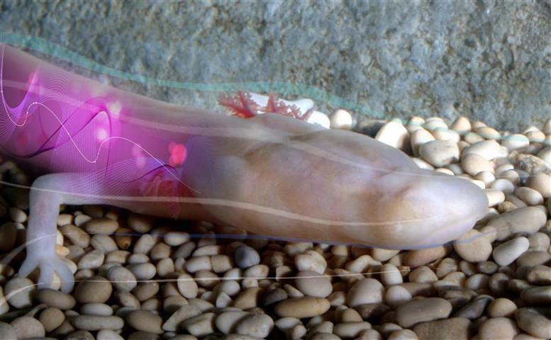
(Photo: Gregor Aljančič)
Tular Cave Laboratory (Society for Cave Biology) & partners developed a research tool to overcome the critical problem when determining Proteus occurrence – inaccessibility of its subterranean habitat. This highly efficient, non-invasive and innovative molecular genetic tool helps to detect traces of Proteus environmental DNA (eDNA) by filtering water samples from groundwater (karst springs, wells or caves). Coupled with GIS analysis, the method was implemented to test for the presence of Proteus in potential new localities, regardless of whether or not the animal has been observed there, as well as to verify selected old data on its distribution.
The results of this study offered a complete picture of
Proteus distribution within the study area and its most vulnerable parts.
Findings were published on 27 March 2017 in the journal
Scientific Reports: "Environmental DNA in subterranean biology: range extension and taxonomic
implications for Proteus" (Read open access article).
Main results of the study (read more in PR announcement)
- The most extensive survey of Proteus distribution ever conducted: 56 karst springs, wells or caves in Slovenia, Bosnia & Herzegovina and Montenegro were sampled and analysed (95 visited).
-
A likely presence of Proteus confirmed at seven new sites along the
southern limit of its known range.
-
First significant extension of Proteus range after 1929: the presence of
Proteus documented for the first time in Montenegro.
-
A highly specific method was developed to detect the eDNA of the black Proteus
morph, which occurs only on 30 km² in Southeastern Slovenia.
- A major increase in the number of known black Proteus sites since its discovery in 1986: the black Proteus was detected at five new sites, which more than doubled the number of sites of this extremely vulnerable population – basis for effective conservation management.
- The eDNA of both black and white Proteus was discovered together in one of the springs, which represents the first evidence that these two populations may be in contact with each other.
The study was organized and conducted by the Tular Cave Laboratory (Society for Cave Biology, Slovenia), in partnership with the Department of Animal Science (Biotechnical Faculty, University of Ljubljana, Slovenia), the Evolutionary Zoology Laboratory (Institute of Biology at the Scientific Research Centre of the Slovenian Academy of Sciences and Arts, Slovenia), the Jeffery Lab (Department of Biology, University of Maryland, USA) and the Department of Life Sciences (University of Trieste, Italy), fieldwork was supported by the Biospeleological Society of Montenegro, the Scientific Research Society Versus (Bosnia & Herzegovina) and Center for Karst and Speleology (Bosnia & Herzegovina).
The study was part of the project “A survey of the distribution of Proteus anguinus by environmental DNA sampling”, co-financed by the Critical Ecosystem Partnership Fund, BirdLife International and DOPPS (CEPF GEM No. 45), and the project “With Proteus we share dependence on groundwater”, financed by the EEA Financial Mechanism and the Norwegian Financial Mechanism 2009-2014 (SI03-EEA2013/MP-17).
Program of the International workshop “Conservation of cave biodiversity in Southeast Dinaric Karst” (Shkodër, Albania, 26. 10. 2016; PDF: 0,49KB)
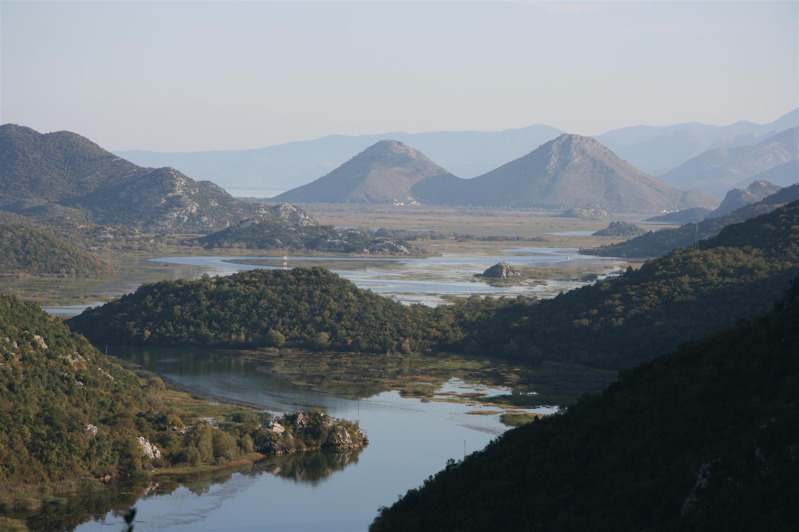
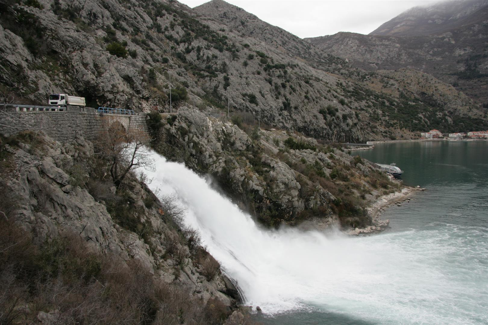
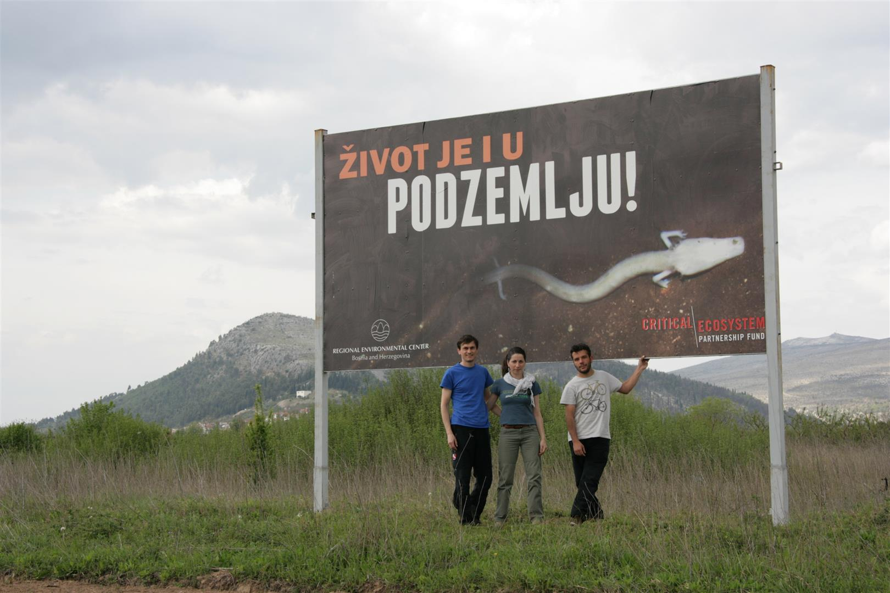

The study was part of projects:
I. "Monitoring of Proteus anguinus by environmental DNA sampling" (2013-2014)
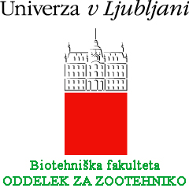


The project was co-financed by Critical Ecosystem Partnership Fund, BirdLife International and DOPPS, 2013–2014
Final project completion report (PDF, 3.89MB)
Finding and protecting hidden species: environmental DNA
Amongst cold, dark caves of dripping stalactites, there is a diverse community of highly-adapted subterranean species. A scientific breakthrough is helping ensure they are monitored and protected in the future. (Read more (archive))
CEPF Top articles: Cave-Dwelling Salamander Sheds Light on Drinking Water Resources
BirdLife International: Scientific breakthrough reveals evidence of ‘human fish’ locked away in cave system (archive)
Conserving the Biodiversity of the Balkans: A Long-Term Strategic Vision for Europe’s natural jewel
Proteus is the flagship species of the Dinaric karst groundwater and its endangered cave fauna. As such, Proteus represents our joint aspiration to raise scientific and public attention needed to preserve them in the future!
Take a visual journey through the Mediterranean Basin Biodiversity Hotspot - explore its StoryMap!
"This network is not just 93 civil society organisations supported by CEPF. It is also 93 organisations who work together more and more as a team to preserve the amazing biodiversity of this region. Despite facing a lot of difficulties today and in the future, civil society organisations are finding inspiration in the work of their fellow CEPF partners from other countries in the hotspot." , said Pierre Carret, Grant Director, CEPF (read more).
II. With Proteus we share dependence on groundwater" (2015)
Applicant: Society for Cave Biology
Partners:
Institute of Biology ZRC SAZU,
Municipality of Črnomelj
and
Municipality of Dobrepolje, in cooperation with
Department of Animal Sciences, Biotechnical Faculty, University of Ljubljana
The project is supported by the EEA Financial Mechanism and the Norwegian Financial Mechanism 2009-2014.
Monitoring distribution of black Proteus
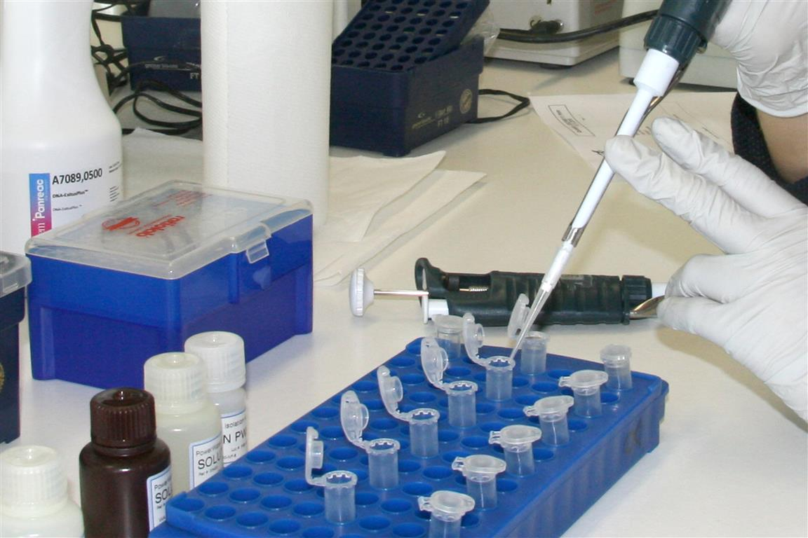
New forensic method developed to detect molecular traces of rare black Proteus in groundwater (environmental DNA).
Number of localities of highly endangered black Proteus doubled.
GIS analysis of groundwater pollution in Bela krajina
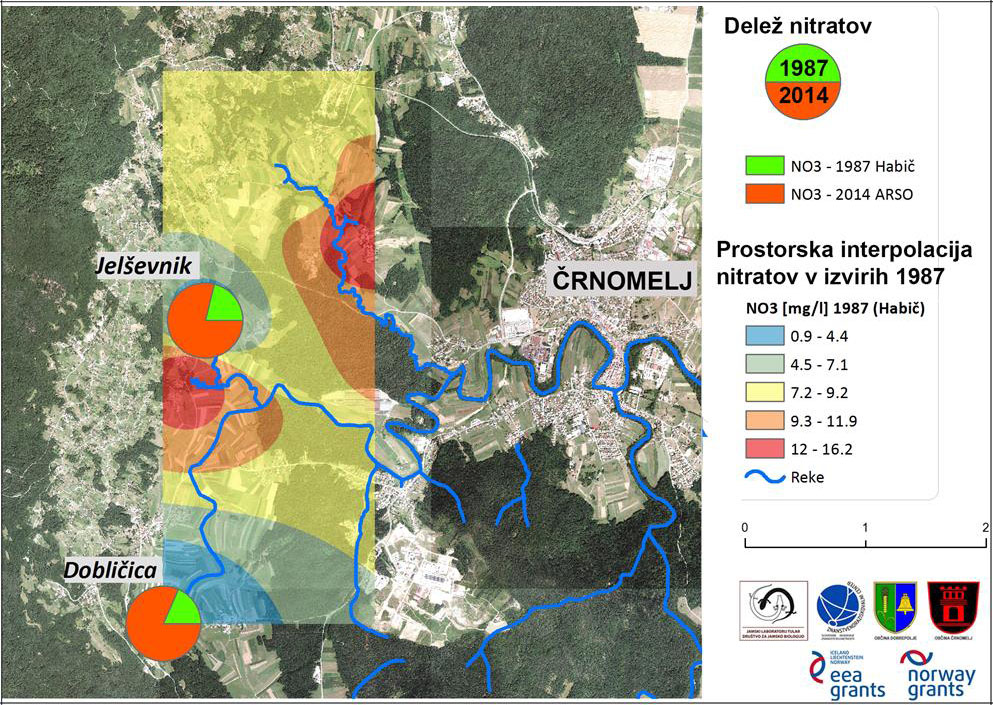
Updated distribution map of black Proteus.
GIS model indicating the current pollution threats on Proteus subterranean cave habitat and groundwater.
International workshop SOS Proteus
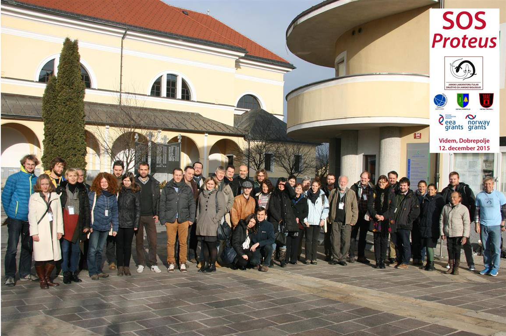
Discussion on implementation of monitoring and practical actions for conservation of Proteus in Slovenia. New methods and solutions shared (Dobrepolje, Slovenia, 12/12/2015).
Program of SOS Proteus (PDF 1.4MB)Vulnerability of Proteus and groundwater
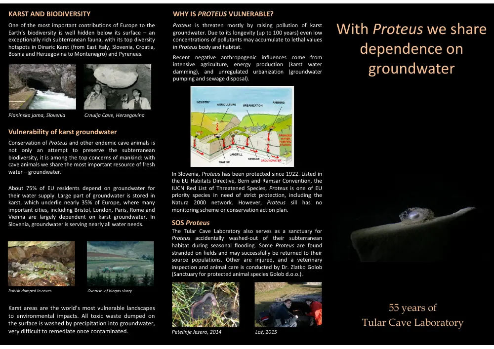
Conservation of Proteus and other endemic cave animals is not merely an attempt to preserve the subterranean biodiversity, with cave animals we share the most important resource of fresh water – groundwater.Conservation of Proteus through public education
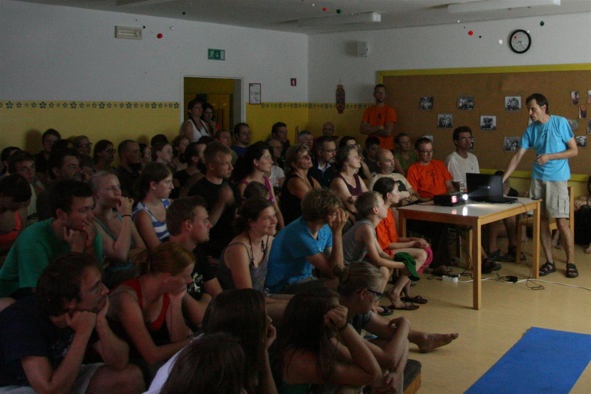
Conservation of Proteus and its subterranean habitat depends on public outreach, emphasizing vulnerability of karst landscape.Sanctuary for injured Proteus
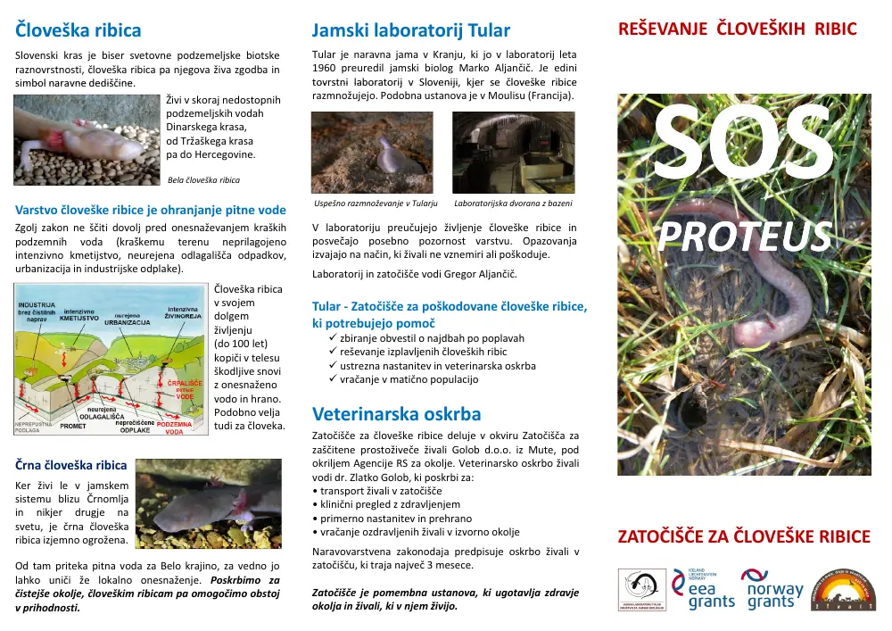
Sanctuary for Proteus accidentally washed‐out of their subterranean habitat during seasonal flooding.
After veterinary inspection and care, animals are released back into their source populations.
Short documentary film SOS Proteus
film on conservation of Proteus and protection of groundwater in Slovenia (English version in preparation)
The film consists of three parts:
1. The idyllic Karst and the myth of Proteus, 2. the reality of pollution in the karst underground, and 3. threats on the black Proteus and drinking water in Bela Krajina, SE Slovenia.
>READ MORE: Vulnerability of Proteus and groundwater
Original project and laboratory records. Dates and historical terminology are retained.